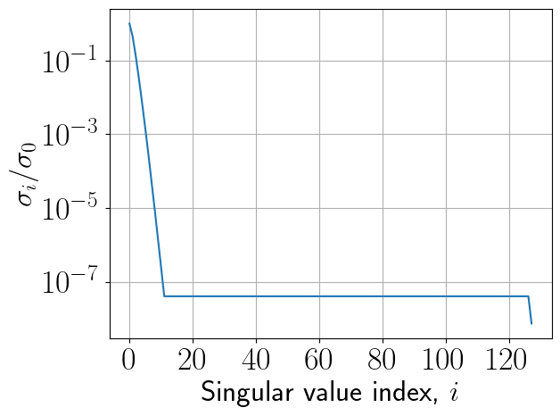

A matrix can be considered as a sequence of vectors that are columns of a matrix:
A = [a_1, \ldots, a_m],
where a_m \in \mathbb{C}^{n\times 1}.
A matrix-by-vector product is equivalent to taking a linear combination of those columns
y = Ax \quad \Longleftrightarrow \quad y = a_1 x_1 + a_2 x_2 + \ldots +a_m x_m.
This is a special case of block matrix notation (columns are also blocks) that we have already seen (blocking to fit cache memory, Strassen algorithm).
Linear dependence
Definition. Vectors a_i are called linearly dependent, if there exist simultaneously non-zero coefficients x_i such that
\sum_i a_i x_i = 0,
or in the matrix form
Ax = 0, \quad \Vert x \Vert \ne 0.
In this case, we say that the matrix A has a non-trivial nullspace (or kernel) denoted by N(A) (or \text{ker}(A)).
Vectors that are not linearly dependent are called linearly independent.
Linear (vector) space
A linear space spanned by vectors \{a_1, \ldots, a_m\} is defined as all possible vectors of the form
\mathcal{L}(a_1, \ldots, a_m) = \left\{y: y = \sum_{i=1}^m a_i x_i, \, \forall x_i, \, i=1,\dots, n \right\},
In the matrix form, the linear space is a set of all y such that
y = A x.
This set is also called the range (or image) of the matrix, denoted by \text{range}(A) (or \text{im}(A)) respectively.
Dimension of a linear space
The dimension of a linear space \text{im}(A) denoted by \text{dim}\, \text{im} (A) is the minimal number of vectors required to represent each vector from \text{im} (A).
The dimension of \text{im}(A) has a direct connection to the matrix rank.
Matrix rank
Rank of a matrix A is a maximal number of linearly independent columns in a matrix A, or the dimension of its column space= \text{dim} \, \text{im}(A).
You can also use linear combination of rows to define the rank, i.e. formally there are two ranks: column rank and row rank of a matrix.
Theorem
The dimension of the column space of the matrix is equal to the dimension of its row space.
Let N\gg 1. Given 0 < \epsilon < 1, a set of m points in \mathbb{R}^N and n > \frac{8 \log m}{\epsilon^2} (we want n\ll N).
Then there exists linear map f from \mathbb{R}^N \rightarrow \mathbb{R}^n such that the following inequality holds:
(1 - \epsilon) \Vert u - v \Vert^2 \leq \Vert f(u) - f(v) \Vert^2 \leq (1 + \epsilon) \Vert u - v \Vert^2.
This theorem states that there exists a map from high- to a low-dimensional space so that distances between points in these spaces are almost the same.
It is not very practical due to the dependence on \epsilon.
This lemma does not give a recipe how to construct f, but guarantees that f exists.
Skeleton decomposition
A very useful representation for computation of the matrix rank is the skeleton decomposition and is closely related to the rank. This decompositions explains, why and how matrices of low rank can be compressed.
It can be graphically represented as follows: or in the matrix form
A = C \widehat{A}^{-1} R,
where C are some k=\mathrm{rank}(A) columns of A, R are some k rows of A and \widehat{A} is the nonsingular submatrix on the intersection.
Remark
We have not yet formally defined the inverse, so just a reminder:
An inverse of the matrix P is the matrix Q = P^{-1} such that $ P Q = QP = I$.
If the matrix is square and has full rank then the inverse exists.
Proof for the skeleton decomposition
Let C\in \mathbb{C}^{n\times k} be the k columns based on the nonsingular submatrix \widehat{A}. Therefore they are linearly independent.
Take any other column a_i of A. Then a_i can be represented as a linear combination of the columns of C, i.e. a_i = C x_i, where x_i is a vector of coefficients.
a_i = C x_i are n equations. We take k equations of those corresponding to the rows that contain \widehat{A} and get the equation
i.e. it is a separation of indices and rank-r is a sum of rank-1 matrices!
Storage
It is interesting to note, that for the rank-r matrix
A = U V
only U and V can be stored, which gives us (n+m) r parameters, so it can be used for compression. We can also compute matrix-by-vector Ax product much faster:
Multiplication y = Vx costs \mathcal{O}(mr) flops.
Multiplication z = Uy costs \mathcal{O}(nr) flops.
The same works for addition, elementwise multiplication, etc. For addition:
#A fast matrix-by-vector product demoimport jaximport jax.numpy as jnpn =4096r =10u = jax.random.normal(jax.random.PRNGKey(0), (n, r))v = jax.random.normal(jax.random.PRNGKey(10), (n, r))a = u @ v.Tx = jax.random.normal(jax.random.PRNGKey(1), (n,))print(n*n/(2*n*r))%timeit (a @ x).block_until_ready()%timeit (u @ (v.T @ x)).block_until_ready()
Platform 'METAL' is experimental and not all JAX functionality may be correctly supported!
WARNING: All log messages before absl::InitializeLog() is called are written to STDERR
W0000 00:00:1730792144.773664 9725347 mps_client.cc:510] WARNING: JAX Apple GPU support is experimental and not all JAX functionality is correctly supported!
I0000 00:00:1730792144.809984 9725347 service.cc:145] XLA service 0x10c42af30 initialized for platform METAL (this does not guarantee that XLA will be used). Devices:
I0000 00:00:1730792144.810137 9725347 service.cc:153] StreamExecutor device (0): Metal, <undefined>
I0000 00:00:1730792144.813529 9725347 mps_client.cc:406] Using Simple allocator.
I0000 00:00:1730792144.813538 9725347 mps_client.cc:384] XLA backend will use up to 11452858368 bytes on device 0 for SimpleAllocator.
Metal device set to: Apple M2 Pro
systemMemory: 16.00 GB
maxCacheSize: 5.33 GB
204.8
612 μs ± 4.04 μs per loop (mean ± std. dev. of 7 runs, 1,000 loops each)
400 μs ± 32.9 μs per loop (mean ± std. dev. of 7 runs, 1,000 loops each)
Computing matrix rank
We can also try to compute the matrix rank using the built-in jnp.linalg.matrix_rank function
#Computing matrix rankimport numpy as npn =50a = np.ones((n, n))print('Rank of the matrix:', np.linalg.matrix_rank(a))b = a +1e-8* np.random.randn(*a.shape)print('Rank of the matrix:', np.linalg.matrix_rank(b, tol=1e-7))
Rank of the matrix: 1
Rank of the matrix: 10
So, small perturbations might crucially affect the rank!
Instability of the matrix rank
For any rank-r matrix A with r < \min(m, n) there is a matrix B such that its rank is equal to \min(m, n) and
\Vert A - B \Vert = \epsilon.
Q: So, does this mean that numerically matrix rank has no meaning? (I.e., small perturbations lead to full rank!)
A: No. We should find a matrix B such that \|A-B\| = \epsilon and B has minimal rank. So we can only compute rank with given accuracy \epsilon. One of the approaches to compute matrix rank r is SVD.
Low rank approximation
The important problem in many applications is to find low-rank approximation of the given matrix with given accurcacy \epsilon or rank r. Examples: * principal component analysis * recommender systems * least squares * neural network compression
These problems can be solved by SVD.
Singular value decomposition
To compute low-rank approximation, we need to compute singular value decomposition (SVD).
Theorem Any matrix A\in \mathbb{C}^{n\times m} can be written as a product of three matrices:
A = U \Sigma V^*,
where - U is an n \times K unitary matrix, - V is an m \times K unitary matrix, K = \min(m, n), - \Sigma is a diagonal matrix with non-negative elements \sigma_1 \geq \ldots, \geq \sigma_K on the diagonal. - Moreover, if \text{rank}(A) = r, then \sigma_{r+1} = \dots = \sigma_K = 0.
Proof
Matrix A^*A is Hermitian, hence diagonalizable in unitary basis (will be discussed further in the course).
A^*A\geq0 (non-negative definite), so eigenvalues are non-negative. Therefore, there exists unitary matrix V = [v_1, \dots, v_n] such that
V^* A^* A V = \text{diag}(\sigma_1^2,\dots, \sigma_n^2), \quad \sigma_1\geq \sigma_2\geq \dots \geq \sigma_n.
Let \sigma_i = 0 for i>r, where r is some integer. Let V_r= [v_1, \dots, v_r], \Sigma_r = \text{diag}(\sigma_1, \dots,\sigma_r). Hence
V^*_r A^* A V_r = \Sigma_r^2 \quad \Longrightarrow \quad (\Sigma_r^{-1} V_r^* A^*) (A V_r\Sigma_r^{-1} ) = I.
As a result, matrix U_r = A V_r\Sigma_r^{-1} satisfies U_r^* U_r = I and hence has orthogonal columns. Let us add to U_r any orthogonal columns that are orthogonal to columns in U_r and denote this matrix as U. Then
AV = U \begin{bmatrix} \Sigma_r & 0 \\ 0 & 0 \end{bmatrix}\quad \Longrightarrow \quad U^* A V = \begin{bmatrix}\Sigma_r & 0 \\ 0 & 0 \end{bmatrix}.
Since multiplication by non-singular matrices does not change rank of A, we have r = \text{rank}(A).
Corollary 1: A = \displaystyle{\sum_{\alpha=1}^r} \sigma_\alpha u_\alpha v_\alpha^* or elementwise a_{ij} = \displaystyle{\sum_{\alpha=1}^r} \sigma_\alpha u_{i\alpha} \overline{v}_{j\alpha}
that is why it is important to look at the decay of the singular values.
Computing SVD
Algorithms for the computation of the SVD are tricky and will be discussed later.
But for numerics, we can use NumPy or JAX or PyTorch already!
Let us go back to the previous example
#Computing matrix rankimport numpy as npn =50a = jnp.ones((n, n))print('Rank of the matrix:', np.linalg.matrix_rank(a))b = a +1e-5* np.random.randn(*a.shape)print('Rank of the matrix:', np.linalg.matrix_rank(b, tol=1e-7))
We can use SVD to compute approximations of function-related matrices, i.e. the matrices of the form
a_{ij} = f(x_i, y_j),
where f is a certain function, and x_i, \quad i = 1, \ldots, n and y_j, \quad j = 1, \ldots, m are some one-dimensional grids.
%matplotlib inlineimport numpy as npimport matplotlib.pyplot as pltplt.rc("text", usetex=False)n =100a = [[1.0/(i-j+0.5) for i inrange(n)] for j inrange(n)] #Hilbert matrix #a = jnp.ones((n, n)) + 1e-3*jax.random.normal(jax.random.PRNGKey(67575), (n, n))a = np.array(a)u, s, v = np.linalg.svd(a)print(s[50] - np.pi)plt.plot(s[:30], 'x')s#plt.ylabel(r"$\sigma_i / \sigma_0$", fontsize=24)#plt.xlabel(r"Singular value index, $i$", fontsize=24)# plt.grid(True)# plt.xticks(fontsize=26)# plt.yticks(fontsize=26)# #We have very good low-rank approximation of it!
where y is a vector of length n, and x is a vector of length r.
The data is organized as samples: we observe vectors
y_1, \ldots, y_T,
but do not know matrix A, then the factor model can be written as
Y = AX,
where Y is n \times T, A is n \times r and X is r \times T.
This is exactly a rank-r model: it tells us that the vectors lie in a small subspace.
We also can use SVD to recover this subspace (but not the independent components).
Principal component analysis can be done by SVD, checkout the implementation in sklearn package.
Applications of SVD
SVD is extremely important in computational science and engineering.
It has many names: Principal component analysis, Proper Orthogonal Decomposition, Empirical Orthogonal Functions
Now we will consider compression of dense matrix and active subspaces method
Dense matrix compression
Dense matrices typically require N^2 elements to be stored. A rank-r approximation can reduces this number to \mathcal{O}(Nr)
import numpy as np%matplotlib inlineimport matplotlib.pyplot as pltn =256a = [[1.0/(i - j +0.5) for i inrange(n)] for j inrange(n)]a = np.array(a)#u, s, v = np.linalg.svd(a)u, s, v = jnp.linalg.svd(a[n//2:, :n//2])plt.semilogy(s/s[0])plt.ylabel(r"$\sigma_i / \sigma_0$", fontsize=24)plt.xlabel(r"Singular value index, $i$", fontsize=24)plt.grid(True)plt.xticks(fontsize=26)plt.yticks(fontsize=26)#s[0] - jnp.pi#u, s, v = jnp.linalg.svd(a[:128:, :128])#print(s[0]-jnp.pi)
DeviceArray(-0.3372376, dtype=float32)

Compression of parameters in fully-connected neural networs
One of the main building blocks of the modern deep neural networks is fully-connected layer a.k.a. linear layer
This layer implements the action of a linear function to an input vector: f(x) = Wx + b, where W is a trainable matrix and b is a trainable bias vector
Both W and b are updated during training of the network according to some optimization method, i.e. SGD, Adam, etc…
However, the storing of the trained optimal parameters (W and b) can be prohibitive if you want to port your trained network to the device, where memory is limited
As a possible recipe, you can compress matrices W_i from the i-th linear layer with the truncated SVD based on the singular values!
What do you get after such apprioximation of W?
memory efficient storage
faster inference
moderate degradation of the accuracy in solving the target task, i.e. image classification
Active Subspaces
Suppose, we are given a function f(x), \ x \in \mathcal{X} \subseteq \mathbb{R}^{n} and want find its low-dimensional parametrization. Here \mathcal{X} is the domain of f(x).
Informally, we are searching for the directions in which a f(x) changes a lot on average and for the directions in which f(x) is almost constant.
Formally, we assume that there is a matrix W \in \mathbb{R}^{r \times n} and a function g: \mathbb{R^r} \to \mathbb{R}, such that for every x \in \mathcal{X}
f(x)
\approx
g(W x).
How to discover Active Subspaces:
Using SVD: 1. Choose m, the number of estimations. This hyperparameter stands for the number of Monte Carlo estimations. The larger m, the more accurate the result is. 2. Draw samples \lbrace x_i \rbrace_{i = 1}^{m} from \mathcal{X} (according to some prior probability density function) 3. For each x_i compute \nabla f(x_i) 4. Compute the SVD of the matrix
G
:=
\dfrac{1}{\sqrt{m}}
\begin{bmatrix}
\nabla f(x_1) & \nabla f(x_2) & \ldots & \nabla f(x_m)
\end{bmatrix}
\approx
U \Sigma V^\top.
Estimate the rank of G \approx U_r \Sigma_r V_r^\top. The rank r of the matrix G is the dimensionality of the active subspace.
Low-dimensional vectors are estimated as x_{\text{AS}} = U_r^\top x.
 or in the matrix form
or in the matrix form